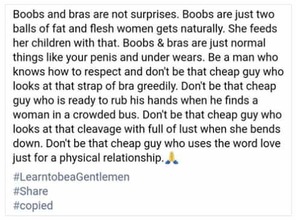

Jani is living in Finland and has always disliked feminism and other forms of dishonest nonsense. He wishes to see the day when truth is respected again.


I happened to spot this patronizing piece of manure on Facebook recently:

The world is full of bullshit and I rarely react to anything, but this happens to be something I see over and over again these days in various forms. Sometimes you have to read between the lines, but with this example, the message is obvious: normal male sexuality and desire for a beautiful woman is something suspicious and almost dangerous. I find this demonizing of normal male sexuality despicable and disgusting.
This meme is of course one of those things that looks nice and something everyone can agree with when you first look at it. “Be a gentleman” and “respect women”—who could disagree with that? But the undercurrent with this kind of meme is something completely different: normal male sexual interest in women and their “assets” is something abnormal and morally questionable. I chose this meme simply because it’s a clear and telling example of a larger trend.
Someone might want to say that this meme simply encourages men to stop staring at women with “greedy eyes” when women can see the man staring at them. I could agree with that, but I don’t think this is the correct interpretation of the underlying message and intention behind this meme. The actual message is this: simply looking at women with sexual interest is somehow suspicious and wrong.
Expressions like “looks at that strap of bra greedily” or “cheap guy who looks at that cleavage with full of lust” clearly support this interpretation.
Why use expressions like “cheap guy” in reference tomen who might steal a glance of a woman’s cleavage or butt when the woman isn’t even looking? Where’s the harm in that? Obviously, there’s no harm, so the only possible interpretation is that the mere intention and feeling of desire behind these glances is somehow wrong and questionable.
This boils down to slandering healthy male sexuality as if there’s something abnormal in a man who feels sexual desire towards a beautiful woman and likes boobs and firm butts. The reality, of course, is that nothing could be more normal than this. Men have always liked the female body and they always will. There’s nothing wrong with this so long as men don’t do anything coercive towards women.
But even this mere feeling of desire and sexual interest towards women is slandered and labeled as something questionable these days. This is quite obvious from this example alone: expressions like “cheap guy,” “greedily,” and “full of lust” are obviously meant to denigrate any man who likes to look at beautiful women and feels sexual desire towards them.
Why do people propagate this message so eagerly these days? I can only guess, but it seems quite clear to me that these people feel some kind of fear towards male sexuality. The male sexual desire itself is somehow scary or dangerous and should be denigrated and slandered so that men would begin to feel shame about their completely healthy desires.
In a certain way, these people want to castrate men: make men into sheepish “gentlemen” who no longer look women with “greedy eyes” and feel sexual desire towards them, or who at least are ashamed of it and keep it to themselves. This is a form of psychological castration and I can only feel a strong sense of contempt towards people who propagate this bullshit.
I want to close this piece with a short examination of the philosophical assumptions behind this whole “boobs are just two balls of fat and flesh women get naturally” way of thinking. The ridiculous assumption behind this kind of reasoning is that values are the same thing as their objects. In other words, values can and always are reduced to whatever their subject matter (or material) happens to be.
For example, by this logic, some priceless religious artifact or a statue would be worthless junk because “it’s just a piece of rock” or whatever. The implication is that any values and interest assigned to it would be ridiculous because who would be interested in a “piece of rock?”
This same idiotic logic is here applied to breasts (and more generally the female body), and the argument, when explicitly stated, goes like this: “boobs are just lumps of fat and flesh, therefore they have no value and can have no sexual interest for anyone.”
Of course, anyone with half a brain can see that this kind of deduction is completely absurd. If this logic is taken to it’s ultimate conclusion, nothing at all would have any value because everything is “just a lump of atoms and molecules” or whatever form of matter it happens to be in any particular case. I seriously have to wonder what kind of imbecile comes up with something like this just to denigrate men who find boobs fascinating (as they naturally do).
It’s easy to construct a reductio ad absurdum from this stupid form of argument, and thus the logic is fallacious. There is no logical connection between values and the material of things on which values may be assigned. No logical deduction can be drawn from one to the other.
Why did I go to such lengths just to demolish something so obviously mistaken? Simply because I’ve seen this same logic applied again and again when it comes to the subject matter of sexuality. But of course, like all pieces of alluring nonsense, this one certainly regenerates, no matter how many times it’s demolished. I’m almost certainly not the first person to demolish it and I won’t be the last. Exorcising popular nonsense like this is truly a Sisyphean task.
I think this is probably enough. I wanted to reveal the real motive and message behind this sort of propaganda. The message is a malicious attempt to slander and denigrate normal male sexuality. “Gentleman” here seems to be a man who doesn’t even feel sexual desire towards women anymore and never looks at women with “greedy eyes.” In other words, an abnormal castrate instead of a healthy man. What a truly despicable agenda!
Read More: Why Feminists Hate Male Sexuality